Calibration example¶
[1]:
import pandas as pd
import numpy as np
import pickle
import matplotlib as mpl
import matplotlib.pyplot as plt
from pathlib import Path
from scipy.stats import bootstrap
from radiocalibrationtoolkit import *
[INFO] LFmap: Import successful.
[2]:
# This ensures Plotly output works in multiple places:
# plotly_mimetype: VS Code notebook UI
# notebook: "Jupyter: Export to HTML" command in VS Code
# See https://plotly.com/python/renderers/#multiple-renderers
import plotly.io as pio
pio.renderers.default = "plotly_mimetype+notebook"
[3]:
# some global plot settings
plt.rcParams["axes.labelweight"] = "bold"
plt.rcParams["font.weight"] = "bold"
plt.rcParams["font.size"] = 16
plt.rcParams["legend.fontsize"] = 14
plt.rcParams["xtick.major.width"] = 2
plt.rcParams["ytick.major.width"] = 2
plt.rcParams["xtick.major.size"] = 5
plt.rcParams["ytick.major.size"] = 5
plt.rcParams["xtick.labelsize"] = 14
plt.rcParams["ytick.labelsize"] = 14
[4]:
# for this example you need to create a mock power dataframe and simulated sidereal power dataset
Calibrate with “true”¶
[5]:
# in this case the recorded is the mock dataset
sky_map_model = "LFmap"
power_rec_DF = pd.read_csv(
"./mock_power_datasets/mock_power_dataset-Salla_EW_"
+ sky_map_model
+ "_N10000_temp-10_50C_0.0additionalnoise_rounding-True.csv",
index_col=0,
)
power_rec_DF.columns = power_rec_DF.columns.astype(float)
dir_path = "./simulated_power_datasets/"
df_files = [
os.path.join(dir_path, i)
for i in os.listdir(dir_path)
if (i.endswith(".csv") & i.startswith("Salla_EW"))
]
file_path_2_true = [i for i in df_files if sky_map_model in i][0]
power_sim_DF = pd.read_csv(file_path_2_true, index_col=0)
power_sim_DF.columns = power_sim_DF.columns.astype(float)
antenna_type = "Salla_EW"
dir_path = "./simulated_power_datasets/"
concatenated_sim_df = concatenate_simulated_dfs(dir_path, antenna_type)
[6]:
# fit each band and make a plot overview
cmapT = plt.get_cmap("jet")
bounds = np.arange(30, 83, 2)
norm = mpl.colors.BoundaryNorm(bounds, cmapT.N)
fig, ax = plt.subplots(figsize=(8, 6))
frequencies_MHz = power_sim_DF.columns.values
slopes = []
intercepts = []
for i, freq in enumerate(power_sim_DF.columns):
c = [freq] * power_rec_DF.index.size
x_arr = power_sim_DF.loc[:, freq].values
y_arr = power_rec_DF.loc[:, freq].values
cs = ax.scatter(x_arr, y_arr, s=10, c=c, norm=norm, cmap="jet")
intercept, slope = robust_regression(x_arr, y_arr)
intercepts.append(intercept)
slopes.append(slope)
x_new = np.linspace(np.min(x_arr), np.max(x_arr), 100)
ax.plot(
x_new,
x_new * slope + intercept,
color=cmapT((freq - np.min(bounds)) * (bounds[1] - bounds[0]) / 100),
)
intercepts = np.asarray(intercepts) ** (1 / 2)
slopes = np.asarray(slopes) ** (1 / 2)
cbar = fig.colorbar(cs, ticks=np.arange(30, 81, 4), ax=ax)
cbar.set_label("Frequency [MHz]")
ax.set_xlabel("simulated power [pW]")
ax.set_ylabel("measured (mock) power [pW]")
fig.subplots_adjust(left=0.15, bottom=0.2)

[7]:
fig_data = pickle.dumps(fig)
fig2 = pickle.loads(fig_data)
# modify the axis limits of the copied figure
ax2 = fig2.axes
ax2[0].set_ylim(2, 18)
fig2
[7]:

[8]:
slopes_DF, intercepts_DF = get_fitted_voltage_calibration_params_and_noise_offsets(power_sim_DF, power_rec_DF)
get_and_plot_calibration_results(slopes_DF, intercepts_DF, title=sky_map_model, labels=None)
Truncating data to 5, 95 percentils
Iteration number: 1 out of max 9 iterations
Test1: p0.5=0.0006078210993757382
Test2: p0.5=-0.0006078210993664124
Test3: p0.5+/-0.341=-0.0018969865284672593
0.9959979989994998 0.9455727863931966 1.0473236618309154
Normalization test: (0.9999996826650178, 8.579063148750484e-06)
[8]:
(0.9959979989994998, 0.9455727863931966, 1.048224112056028)


Calibrate with all ‘not true’ simulated datasets¶
[9]:
df_list = []
df_names = []
except_this = "Salla_EW_"+sky_map_model
for f in df_files:
if except_this not in f:
df = pd.read_csv(f, index_col=0)
df.columns = df.columns.astype(float)
df_list.append(df)
df_names.append(Path(f).stem)
concatenated_sim_df = pd.concat(df_list, keys=df_names)
# check keys
[key for key in concatenated_sim_df.index.levels[0]]
[9]:
['Salla_EW_GMOSS',
'Salla_EW_ULSA',
'Salla_EW_GSM08',
'Salla_EW_Haslam',
'Salla_EW_SSM',
'Salla_EW_LFSS',
'Salla_EW_GSM16']
[10]:
(
slopes_DF,
intercepts_DF,
) = get_fitted_voltage_cal_params_and_noise_offsets_from_concat_sim_dfs(
concatenated_sim_df, power_rec_DF
)
get_and_plot_calibration_results(slopes_DF, intercepts_DF, title=except_this)
Truncating data to 5, 95 percentils
Iteration number: 1 out of max 9 iterations
Test1: p0.5=-0.0017821772044139261
Test2: p0.5=0.0017821772044235296
Test3: p0.5+/-0.341=0.00038797491434039433
1.0635317658829415 1.0023011505752877 1.125662831415708
Normalization test: (1.0000005335287563, 4.765854054744162e-06)
[10]:
(1.0635317658829415, 1.0023011505752877, 1.1265632816408204)

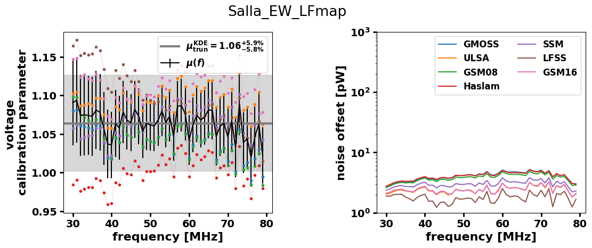
Iteratively apply the previous procedure to all simulated datasets¶
[11]:
# for this example you need to create a mock power dataframe and simulated sidereal power dataset
[12]:
galactic_models = [
"GSM16",
"LFSS",
"GSM08",
"Haslam",
"LFmap",
"SSM",
"GMOSS",
"ULSA",
]
all_freq_dep_cal_params_dict = {}
all_freq_dep_noise_dict = {}
central_stats_dict = {}
for gmodel in galactic_models:
print("************************")
print(gmodel)
df_list = []
df_names = []
measured_label = "Salla_EW_" + gmodel
for f in df_files:
# if measured_label not in f:
df = pd.read_csv(f, index_col=0)
df.columns = df.columns.astype(float)
df_list.append(df)
df_names.append(Path(f).stem)
print(df_names)
concatenated_sim_df = pd.concat(df_list, keys=df_names)
power_rec_DF = pd.read_csv(
"./mock_power_datasets/mock_power_dataset-"
+ measured_label
+ "_N10000_temp-10_50C_0.0additionalnoise_rounding-True.csv",
index_col=0,
)
power_rec_DF.columns = power_rec_DF.columns.astype(float)
(
slopes_DF,
intercepts_DF,
) = get_fitted_voltage_cal_params_and_noise_offsets_from_concat_sim_dfs(
concatenated_sim_df, power_rec_DF
)
all_freq_dep_cal_params_dict[gmodel], all_freq_dep_noise_dict[gmodel] = (
slopes_DF,
intercepts_DF,
)
# central_stats_dict[gmodel] = get_and_plot_calibration_results(
# slopes_DF, intercepts_DF, title=gmodel
# )
# exclude the "true" from the KDE calculations and plots
mask = slopes_DF.index != measured_label
print(slopes_DF[mask].index.values)
central_stats_dict[gmodel] = get_and_plot_calibration_results(
slopes_DF[mask], intercepts_DF[mask], title=gmodel
)
print("************************")
# fig = plt.gcf()
# fig.savefig('with_not_true_{}.png'.format(gmodel), bbox_inches = 'tight')
************************
GSM16
['Salla_EW_GMOSS', 'Salla_EW_ULSA', 'Salla_EW_GSM08', 'Salla_EW_Haslam', 'Salla_EW_LFmap', 'Salla_EW_SSM', 'Salla_EW_LFSS', 'Salla_EW_GSM16']
['Salla_EW_GMOSS' 'Salla_EW_ULSA' 'Salla_EW_GSM08' 'Salla_EW_Haslam'
'Salla_EW_LFmap' 'Salla_EW_SSM' 'Salla_EW_LFSS']
Truncating data to 5, 95 percentils
Iteration number: 1 out of max 9 iterations
Test1: p0.5=0.002174319595923735
Test2: p0.5=-0.0021743195959137984
Test3: p0.5+/-0.341=-0.002416614628958702
0.9356678339169586 0.8753376688344172 0.9968984492246125
Normalization test: (0.9999997607912533, 3.2552056166181145e-06)
************************
************************
LFSS
['Salla_EW_GMOSS', 'Salla_EW_ULSA', 'Salla_EW_GSM08', 'Salla_EW_Haslam', 'Salla_EW_LFmap', 'Salla_EW_SSM', 'Salla_EW_LFSS', 'Salla_EW_GSM16']
['Salla_EW_GMOSS' 'Salla_EW_ULSA' 'Salla_EW_GSM08' 'Salla_EW_Haslam'
'Salla_EW_LFmap' 'Salla_EW_SSM' 'Salla_EW_GSM16']
Truncating data to 5, 95 percentils
Iteration number: 1 out of max 9 iterations
Test1: p0.5=-0.0026656882041229957
Test2: p0.5=0.002665688204132599
Test3: p0.5+/-0.341=0.0016228715234236635
0.9527763881940972 0.8897448724362182 1.0185092546273138
Normalization test: (0.9999996116825947, 4.973531270917492e-06)
************************
************************
GSM08
['Salla_EW_GMOSS', 'Salla_EW_ULSA', 'Salla_EW_GSM08', 'Salla_EW_Haslam', 'Salla_EW_LFmap', 'Salla_EW_SSM', 'Salla_EW_LFSS', 'Salla_EW_GSM16']
['Salla_EW_GMOSS' 'Salla_EW_ULSA' 'Salla_EW_Haslam' 'Salla_EW_LFmap'
'Salla_EW_SSM' 'Salla_EW_LFSS' 'Salla_EW_GSM16']
Truncating data to 5, 95 percentils
Iteration number: 1 out of max 9 iterations
Test1: p0.5=-5.328442671259648e-06
Test2: p0.5=5.32844268053001e-06
Test3: p0.5+/-0.341=0.0008446868516868156
1.0104052026013006 0.944672336168084 1.0752376188094048
Normalization test: (0.9999999429835957, 6.576854751385293e-06)
************************
************************
Haslam
['Salla_EW_GMOSS', 'Salla_EW_ULSA', 'Salla_EW_GSM08', 'Salla_EW_Haslam', 'Salla_EW_LFmap', 'Salla_EW_SSM', 'Salla_EW_LFSS', 'Salla_EW_GSM16']
['Salla_EW_GMOSS' 'Salla_EW_ULSA' 'Salla_EW_GSM08' 'Salla_EW_LFmap'
'Salla_EW_SSM' 'Salla_EW_LFSS' 'Salla_EW_GSM16']
Truncating data to 5, 95 percentils
Iteration number: 1 out of max 9 iterations
Test1: p0.5=0.002244839314243019
Test2: p0.5=-0.0022448393142333045
Test3: p0.5+/-0.341=0.0021073689429030873
1.056328164082041 0.991495747873937 1.1202601300650326
Normalization test: (1.0000010415098421, 5.853550830967539e-06)
************************
************************
LFmap
['Salla_EW_GMOSS', 'Salla_EW_ULSA', 'Salla_EW_GSM08', 'Salla_EW_Haslam', 'Salla_EW_LFmap', 'Salla_EW_SSM', 'Salla_EW_LFSS', 'Salla_EW_GSM16']
['Salla_EW_GMOSS' 'Salla_EW_ULSA' 'Salla_EW_GSM08' 'Salla_EW_Haslam'
'Salla_EW_SSM' 'Salla_EW_LFSS' 'Salla_EW_GSM16']
Truncating data to 5, 95 percentils
Iteration number: 1 out of max 9 iterations
Test1: p0.5=-0.0017821772044139261
Test2: p0.5=0.0017821772044235296
Test3: p0.5+/-0.341=0.00038797491434039433
1.0635317658829415 1.0023011505752877 1.125662831415708
Normalization test: (1.0000005335287563, 4.765854054744162e-06)
************************
************************
SSM
['Salla_EW_GMOSS', 'Salla_EW_ULSA', 'Salla_EW_GSM08', 'Salla_EW_Haslam', 'Salla_EW_LFmap', 'Salla_EW_SSM', 'Salla_EW_LFSS', 'Salla_EW_GSM16']
['Salla_EW_GMOSS' 'Salla_EW_ULSA' 'Salla_EW_GSM08' 'Salla_EW_Haslam'
'Salla_EW_LFmap' 'Salla_EW_LFSS' 'Salla_EW_GSM16']
Truncating data to 5, 95 percentils
Iteration number: 1 out of max 9 iterations
Test1: p0.5=0.002420342610871651
Test2: p0.5=-0.002420342610862103
Test3: p0.5+/-0.341=6.598389102518976e-05
0.9869934967483742 0.9203601800900452 1.054527263631816
Normalization test: (0.9999996083730416, 6.945302130818199e-06)
************************
************************
GMOSS
['Salla_EW_GMOSS', 'Salla_EW_ULSA', 'Salla_EW_GSM08', 'Salla_EW_Haslam', 'Salla_EW_LFmap', 'Salla_EW_SSM', 'Salla_EW_LFSS', 'Salla_EW_GSM16']
['Salla_EW_ULSA' 'Salla_EW_GSM08' 'Salla_EW_Haslam' 'Salla_EW_LFmap'
'Salla_EW_SSM' 'Salla_EW_LFSS' 'Salla_EW_GSM16']
Truncating data to 5, 95 percentils
Iteration number: 1 out of max 9 iterations
Test1: p0.5=-0.0024821799085868457
Test2: p0.5=0.002482179908596338
Test3: p0.5+/-0.341=0.000974668134731016
1.0131065532766383 0.9482741370685344 1.078839419709855
Normalization test: (0.9999999948079411, 7.262696357398249e-06)
************************
************************
ULSA
['Salla_EW_GMOSS', 'Salla_EW_ULSA', 'Salla_EW_GSM08', 'Salla_EW_Haslam', 'Salla_EW_LFmap', 'Salla_EW_SSM', 'Salla_EW_LFSS', 'Salla_EW_GSM16']
['Salla_EW_GMOSS' 'Salla_EW_GSM08' 'Salla_EW_Haslam' 'Salla_EW_LFmap'
'Salla_EW_SSM' 'Salla_EW_LFSS' 'Salla_EW_GSM16']
Truncating data to 5, 95 percentils
Iteration number: 1 out of max 9 iterations
Test1: p0.5=0.00165208727835231
Test2: p0.5=-0.001652087278342762
Test3: p0.5+/-0.341=0.0009122554419006557
0.9509754877438721 0.887943971985993 1.015807903951976
Normalization test: (0.999999676719685, 5.043118322643974e-06)
************************


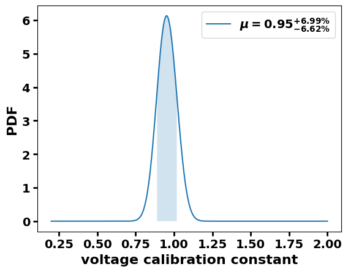
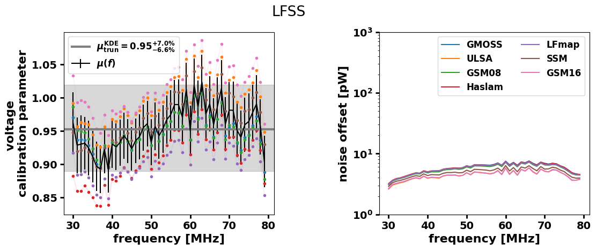
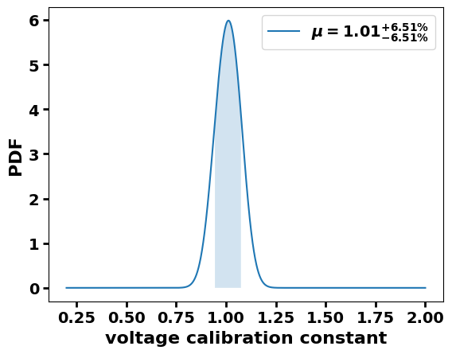
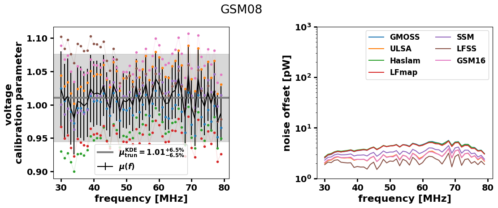
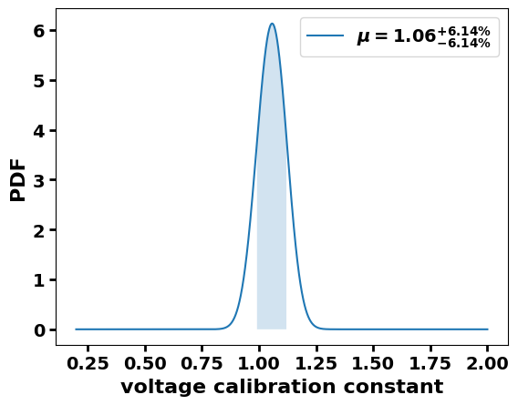


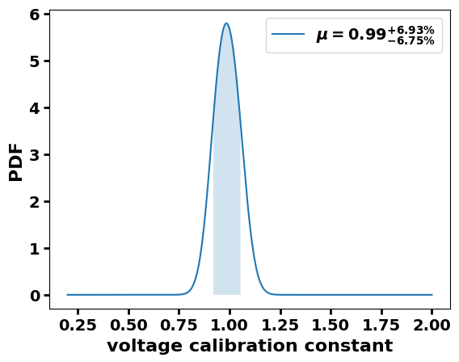
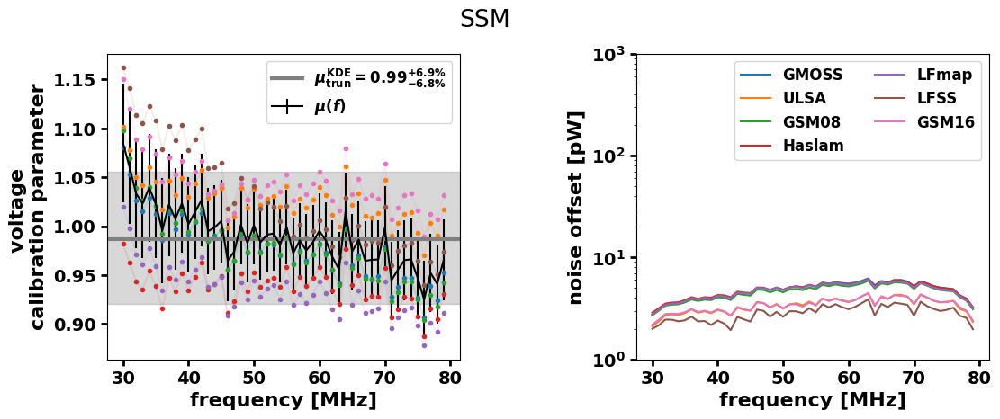


[13]:
all_slopes_df = pd.concat(all_freq_dep_cal_params_dict)
all_intercepts_df = pd.concat(all_freq_dep_noise_dict)
central_stats_DF = pd.DataFrame(central_stats_dict, index=["mu", "err_low", "err_high"]).T
[14]:
get_and_plot_calibration_results(all_slopes_df, all_intercepts_df, title="", labels=None)
Truncating data to 5, 95 percentils
Iteration number: 1 out of max 9 iterations
Test1: p0.5=0.0009805924107588737
Test2: p0.5=-0.0009805924107481045
Test3: p0.5+/-0.341=0.0012921728570519653
0.9959979989994998 0.924862431215608 1.068934467233617
Normalization test: (0.9999999657393277, 4.9459300101264076e-06)
[14]:
(0.9959979989994998, 0.924862431215608, 1.0698349174587294)
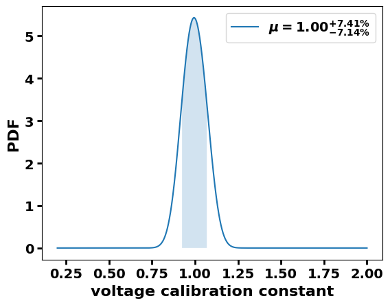
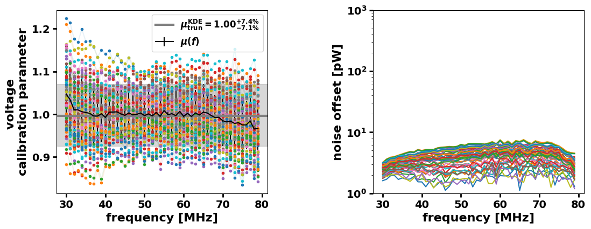
[15]:
# calculate calibration parameters for each scenario
cal_params = {}
cal_params_neg_err = {}
cal_params_pos_err = {}
for k in all_freq_dep_cal_params_dict.keys():
temp_df = all_freq_dep_cal_params_dict[k]
cal_params[k] = []
cal_params_neg_err[k] = []
cal_params_pos_err[k] = []
print(temp_df.index)
for row in temp_df.index:
print('{} vs {}'.format(k, row))
left, right, center = get_frequency_independent_calibration_param(temp_df.loc[row,:])
cal_params[k].append(center)
cal_params_neg_err[k].append(left - center)
cal_params_pos_err[k].append(right - center)
Index(['Salla_EW_GMOSS', 'Salla_EW_ULSA', 'Salla_EW_GSM08', 'Salla_EW_Haslam',
'Salla_EW_LFmap', 'Salla_EW_SSM', 'Salla_EW_LFSS', 'Salla_EW_GSM16'],
dtype='object')
GSM16 vs Salla_EW_GMOSS
Truncating data to 5, 95 percentils
Iteration number: 1 out of max 9 iterations
Test1: p0.5=-0.0025977884407848983
Test2: p0.5=0.0025977884407942797
Test3: p0.5+/-0.341=0.0005314665037673416
0.9302651325662832 0.8771385692846423 0.9842921460730365
Normalization test: (1.000000069398638, 6.375856491796777e-06)
GSM16 vs Salla_EW_ULSA
Truncating data to 5, 95 percentils
Iteration number: 1 out of max 9 iterations
Test1: p0.5=-0.000419782766687693
Test2: p0.5=0.00041978276669707437
Test3: p0.5+/-0.341=-0.0013414363124913953
0.9788894447223613 0.9275637818909455 1.0311155577788895
Normalization test: (0.9999992795819773, 1.8077718352672214e-06)
GSM16 vs Salla_EW_GSM08
Truncating data to 5, 95 percentils
Iteration number: 1 out of max 9 iterations
Test1: p0.5=0.000721429509729532
Test2: p0.5=-0.0007214295097203727
Test3: p0.5+/-0.341=-0.002031603981097252
0.9311655827913958 0.8771385692846423 0.9851925962981491
Normalization test: (1.0000000794985648, 4.807343904197531e-06)
GSM16 vs Salla_EW_Haslam
Truncating data to 5, 95 percentils
Iteration number: 1 out of max 9 iterations
Test1: p0.5=0.001029327447035988
Test2: p0.5=-0.0010293274470266622
Test3: p0.5+/-0.341=0.0017955856218669908
0.894247123561781 0.8420210105052526 0.9464732366183093
Normalization test: (1.0000015207802915, 3.13054383664353e-06)
GSM16 vs Salla_EW_LFmap
Truncating data to 5, 95 percentils
Iteration number: 1 out of max 9 iterations
Test1: p0.5=-0.0026404371712007713
Test2: p0.5=0.002640437171210097
Test3: p0.5+/-0.341=0.0007049538984786885
0.8897448724362182 0.8384192096048024 0.9419709854927465
Normalization test: (1.0000017221230597, 5.00430174995639e-06)
GSM16 vs Salla_EW_SSM
Truncating data to 5, 95 percentils
Iteration number: 1 out of max 9 iterations
Test1: p0.5=0.0023549227896587643
Test2: p0.5=-0.002354922789649383
Test3: p0.5+/-0.341=0.0029738824698209987
0.9527763881940972 0.9005502751375689 1.0050025012506254
Normalization test: (0.9999991624804896, 2.5451759454266447e-06)
GSM16 vs Salla_EW_LFSS
Truncating data to 5, 95 percentils
Iteration number: 1 out of max 9 iterations
Test1: p0.5=-0.0006690968898482863
Test2: p0.5=0.0006690968898575012
Test3: p0.5+/-0.341=0.0012430632051779744
0.9788894447223613 0.9167583791895948 1.0428214107053528
Normalization test: (1.000000951060131, 8.637438883877732e-07)
GSM16 vs Salla_EW_GSM16
Truncating data to 5, 95 percentils
Iteration number: 1 out of max 9 iterations
Test1: p0.5=-0.00045201650713577735
Test2: p0.5=0.0004520165071451032
Test3: p0.5+/-0.341=-0.0016104251866339014
0.9941970985492747 0.9437718859429716 1.0455227613806903
Normalization test: (0.9999996211138065, 8.70483781064553e-06)
Index(['Salla_EW_GMOSS', 'Salla_EW_ULSA', 'Salla_EW_GSM08', 'Salla_EW_Haslam',
'Salla_EW_LFmap', 'Salla_EW_SSM', 'Salla_EW_LFSS', 'Salla_EW_GSM16'],
dtype='object')
LFSS vs Salla_EW_GMOSS
Truncating data to 5, 95 percentils
Iteration number: 1 out of max 9 iterations
Test1: p0.5=0.0025865300556778825
Test2: p0.5=-0.002586530055668612
Test3: p0.5+/-0.341=0.0012962048626242728
0.9455727863931966 0.8924462231115557 0.9986993496748375
Normalization test: (1.000004465756486, 4.915124465568904e-06)
LFSS vs Salla_EW_ULSA
Truncating data to 5, 95 percentils
Iteration number: 1 out of max 9 iterations
Test1: p0.5=0.0012178128196086435
Test2: p0.5=-0.0012178128195993732
Test3: p0.5+/-0.341=0.00016048604044616166
0.9950975487743872 0.9383691845922961 1.0527263631815909
Normalization test: (0.9999995188041708, 7.805661958231215e-06)
LFSS vs Salla_EW_GSM08
Truncating data to 5, 95 percentils
Iteration number: 1 out of max 9 iterations
Test1: p0.5=0.0007832955319670987
Test2: p0.5=-0.0007832955319577173
Test3: p0.5+/-0.341=-0.0008048834002812866
0.9464732366183093 0.894247123561781 0.99959979989995
Normalization test: (1.0000003264928308, 8.186435573992603e-06)
LFSS vs Salla_EW_Haslam
Truncating data to 5, 95 percentils
Iteration number: 1 out of max 9 iterations
Test1: p0.5=0.0009900144761892937
Test2: p0.5=-0.0009900144761798013
Test3: p0.5+/-0.341=-0.0011605343601281959
0.9095547773886945 0.8510255127563782 0.9680840420210106
Normalization test: (0.9999994760562738, 5.634389359225966e-06)
LFSS vs Salla_EW_LFmap
Truncating data to 5, 95 percentils
Iteration number: 1 out of max 9 iterations
Test1: p0.5=0.0013481017722904998
Test2: p0.5=-0.0013481017722810629
Test3: p0.5+/-0.341=-0.00016189312925174448
0.9041520760380191 0.8501250625312657 0.9581790895447724
Normalization test: (1.000000931154891, 6.235535137442426e-07)
LFSS vs Salla_EW_SSM
Truncating data to 5, 95 percentils
Iteration number: 1 out of max 9 iterations
Test1: p0.5=0.002352528939578491
Test2: p0.5=-0.0023525289395689986
Test3: p0.5+/-0.341=-0.0019333706854117727
0.9680840420210106 0.9095547773886945 1.0266133066533267
Normalization test: (0.9999992823377135, 8.956060004370898e-06)
LFSS vs Salla_EW_LFSS
Truncating data to 5, 95 percentils
Iteration number: 1 out of max 9 iterations
Test1: p0.5=-0.0026639594199283634
Test2: p0.5=0.0026639594199375782
Test3: p0.5+/-0.341=0.0004165068911444747
0.9959979989994998 0.944672336168084 1.048224112056028
Normalization test: (0.9999996633233184, 8.539772669062718e-06)
LFSS vs Salla_EW_GSM16
Truncating data to 5, 95 percentils
Iteration number: 1 out of max 9 iterations
Test1: p0.5=-0.003051813843806206
Test2: p0.5=0.0030518138438154763
Test3: p0.5+/-0.341=-0.0006058155906422114
1.0104052026013006 0.9536768384192096 1.068934467233617
Normalization test: (0.99999990990384, 5.534288045934047e-06)
Index(['Salla_EW_GMOSS', 'Salla_EW_ULSA', 'Salla_EW_GSM08', 'Salla_EW_Haslam',
'Salla_EW_LFmap', 'Salla_EW_SSM', 'Salla_EW_LFSS', 'Salla_EW_GSM16'],
dtype='object')
GSM08 vs Salla_EW_GMOSS
Truncating data to 5, 95 percentils
Iteration number: 1 out of max 9 iterations
Test1: p0.5=-0.0030104598428026264
Test2: p0.5=0.0030104598428120077
Test3: p0.5+/-0.341=-0.0005270962175228933
0.9941970985492747 0.9437718859429716 1.046423211605803
Normalization test: (0.9999996209742537, 8.734785359921886e-06)
GSM08 vs Salla_EW_ULSA
Truncating data to 5, 95 percentils
Iteration number: 1 out of max 9 iterations
Test1: p0.5=-0.0015144450853161184
Test2: p0.5=0.0015144450853253888
Test3: p0.5+/-0.341=-6.0507780532681466e-06
1.044622311155578 0.9932966483241621 1.0968484242121062
Normalization test: (1.0000007200928744, 6.695484282977501e-06)
GSM08 vs Salla_EW_GSM08
Truncating data to 5, 95 percentils
Iteration number: 1 out of max 9 iterations
Test1: p0.5=-0.00028936251963573856
Test2: p0.5=0.00028936251964506443
Test3: p0.5+/-0.341=-0.0006255216109987138
0.9950975487743872 0.9437718859429716 1.0473236618309154
Normalization test: (0.9999996281727748, 8.71498094063647e-06)
GSM08 vs Salla_EW_Haslam
Truncating data to 5, 95 percentils
Iteration number: 1 out of max 9 iterations
Test1: p0.5=-0.002257200322691999
Test2: p0.5=0.0022572003227013804
Test3: p0.5+/-0.341=0.0013496682342849509
0.9545772886443222 0.902351175587794 1.0077038519259631
Normalization test: (0.9999991864903206, 2.40117748322961e-06)
GSM08 vs Salla_EW_LFmap
Truncating data to 5, 95 percentils
Iteration number: 1 out of max 9 iterations
Test1: p0.5=-0.00042817081904528154
Test2: p0.5=0.0004281708190545519
Test3: p0.5+/-0.341=-0.0011393555026476543
0.9500750375187594 0.8996498249124563 1.001400700350175
Normalization test: (0.9999990992415024, 2.4863797018656774e-06)
GSM08 vs Salla_EW_SSM
Truncating data to 5, 95 percentils
Iteration number: 1 out of max 9 iterations
Test1: p0.5=0.0003213812894785617
Test2: p0.5=-0.00032138128946940236
Test3: p0.5+/-0.341=0.0021444433863542223
1.0167083541770885 0.9644822411205602 1.0698349174587294
Normalization test: (1.0000001348560674, 4.8228843200935005e-06)
GSM08 vs Salla_EW_LFSS
Truncating data to 5, 95 percentils
Iteration number: 1 out of max 9 iterations
Test1: p0.5=0.00264952742172464
Test2: p0.5=-0.002649527421715314
Test3: p0.5+/-0.341=-6.172130232573458e-06
1.046423211605803 0.9896948474237119 1.1040520260130064
Normalization test: (0.9999996080916841, 8.339899705942322e-06)
GSM08 vs Salla_EW_GSM16
Truncating data to 5, 95 percentils
Iteration number: 1 out of max 9 iterations
Test1: p0.5=0.0031582225568113076
Test2: p0.5=-0.003158222556801926
Test3: p0.5+/-0.341=0.0005006982011835914
1.0626313156578289 1.0113056528264133 1.1148574287143573
Normalization test: (1.0000013700983112, 6.797669813604263e-06)
Index(['Salla_EW_GMOSS', 'Salla_EW_ULSA', 'Salla_EW_GSM08', 'Salla_EW_Haslam',
'Salla_EW_LFmap', 'Salla_EW_SSM', 'Salla_EW_LFSS', 'Salla_EW_GSM16'],
dtype='object')
Haslam vs Salla_EW_GMOSS
Truncating data to 5, 95 percentils
Iteration number: 1 out of max 9 iterations
Test1: p0.5=0.0001678266616669255
Test2: p0.5=-0.0001678266616574331
Test3: p0.5+/-0.341=-0.0013022044289922041
1.032016008004002 0.9770885442721362 1.0878439219609806
Normalization test: (0.9999989679484808, 4.478272886396456e-06)
Haslam vs Salla_EW_ULSA
Truncating data to 5, 95 percentils
Iteration number: 1 out of max 9 iterations
Test1: p0.5=1.700272071336606e-05
Test2: p0.5=-1.7002720704095697e-05
Test3: p0.5+/-0.341=-0.001328857003872752
1.0860430215107555 1.0347173586793397 1.1382691345672837
Normalization test: (0.9999995725568585, 7.747952095725677e-07)
Haslam vs Salla_EW_GSM08
Truncating data to 5, 95 percentils
Iteration number: 1 out of max 9 iterations
Test1: p0.5=-0.0004384293934339145
Test2: p0.5=0.0004384293934431849
Test3: p0.5+/-0.341=0.0005915107171264866
1.032016008004002 0.9752876438219109 1.0896448224112056
Normalization test: (0.9999991440610075, 3.896640302314104e-06)
Haslam vs Salla_EW_Haslam
Truncating data to 5, 95 percentils
Iteration number: 1 out of max 9 iterations
Test1: p0.5=0.0028507618762001474
Test2: p0.5=-0.0028507618761908216
Test3: p0.5+/-0.341=0.0023828309044603424
0.9932966483241621 0.9419709854927465 1.044622311155578
Normalization test: (0.9999995770376157, 8.867387108797784e-06)
Haslam vs Salla_EW_LFmap
Truncating data to 5, 95 percentils
Iteration number: 1 out of max 9 iterations
Test1: p0.5=-0.0023036414067221234
Test2: p0.5=0.0023036414067315603
Test3: p0.5+/-0.341=0.0007240122910415758
0.9869934967483742 0.934767383691846 1.0410205102551275
Normalization test: (1.00000090666337, 8.659531281019178e-06)
Haslam vs Salla_EW_SSM
Truncating data to 5, 95 percentils
Iteration number: 1 out of max 9 iterations
Test1: p0.5=-0.0033991688286662547
Test2: p0.5=0.003399168828675636
Test3: p0.5+/-0.341=0.0013347937695361578
1.056328164082041 1.0059029514757378 1.1085542771385692
Normalization test: (1.0000008277599013, 6.705609041418548e-06)
Haslam vs Salla_EW_LFSS
Truncating data to 5, 95 percentils
Iteration number: 1 out of max 9 iterations
Test1: p0.5=-0.002054287941039179
Test2: p0.5=0.0020542879410486714
Test3: p0.5+/-0.341=0.00044200727508403315
1.0824412206103051 1.0167083541770885 1.1571785892946473
Normalization test: (1.0000001389062552, 5.259515901374302e-06)
Haslam vs Salla_EW_GSM16
Truncating data to 5, 95 percentils
Iteration number: 1 out of max 9 iterations
Test1: p0.5=0.0014670993949902345
Test2: p0.5=-0.0014670993949807976
Test3: p0.5+/-0.341=6.220736990270037e-05
1.1022511255627814 1.0500250125062531 1.1553776888444223
Normalization test: (0.9999995456318093, 1.3298149850116806e-07)
Index(['Salla_EW_GMOSS', 'Salla_EW_ULSA', 'Salla_EW_GSM08', 'Salla_EW_Haslam',
'Salla_EW_LFmap', 'Salla_EW_SSM', 'Salla_EW_LFSS', 'Salla_EW_GSM16'],
dtype='object')
LFmap vs Salla_EW_GMOSS
Truncating data to 5, 95 percentils
Iteration number: 1 out of max 9 iterations
Test1: p0.5=0.0013346717252471496
Test2: p0.5=-0.0013346717252377682
Test3: p0.5+/-0.341=-0.00019124703658734976
1.0410205102551275 0.9896948474237119 1.0932466233116558
Normalization test: (1.0000005871893873, 6.52214046899141e-06)
LFmap vs Salla_EW_ULSA
Truncating data to 5, 95 percentils
Iteration number: 1 out of max 9 iterations
Test1: p0.5=-0.0023605522074534036
Test2: p0.5=0.002360552207462785
Test3: p0.5+/-0.341=0.001851104025346384
1.0941470735367684 1.0437218609304653 1.1463731865932967
Normalization test: (0.99999950076478, 2.6762057581680105e-07)
LFmap vs Salla_EW_GSM08
Truncating data to 5, 95 percentils
Iteration number: 1 out of max 9 iterations
Test1: p0.5=0.0006772178250368244
Test2: p0.5=-0.000677217825027443
Test3: p0.5+/-0.341=0.0001718715901880552
1.0410205102551275 0.9887943971985993 1.0941470735367684
Normalization test: (1.0000006318897015, 6.698929792442375e-06)
LFmap vs Salla_EW_Haslam
Truncating data to 5, 95 percentils
Iteration number: 1 out of max 9 iterations
Test1: p0.5=0.0010115610776453288
Test2: p0.5=-0.0010115610776358364
Test3: p0.5+/-0.341=0.00028207890555476123
0.99959979989995 0.9482741370685344 1.0518259129564782
Normalization test: (0.9999997485200359, 8.23335337492073e-06)
LFmap vs Salla_EW_LFmap
Truncating data to 5, 95 percentils
Iteration number: 1 out of max 9 iterations
Test1: p0.5=0.0006078210993757382
Test2: p0.5=-0.0006078210993664124
Test3: p0.5+/-0.341=-0.0018969865284672593
0.9959979989994998 0.9455727863931966 1.0473236618309154
Normalization test: (0.9999996826650178, 8.579063148750484e-06)
LFmap vs Salla_EW_SSM
Truncating data to 5, 95 percentils
Iteration number: 1 out of max 9 iterations
Test1: p0.5=0.0008422900793942922
Test2: p0.5=-0.0008422900793849109
Test3: p0.5+/-0.341=0.002119314871740108
1.0644322161080542 1.0131065532766383 1.1166583291645824
Normalization test: (1.0000014741300853, 6.612580720201897e-06)
LFmap vs Salla_EW_LFSS
Truncating data to 5, 95 percentils
Iteration number: 1 out of max 9 iterations
Test1: p0.5=-7.831984017780957e-05
Test2: p0.5=7.831984018724647e-05
Test3: p0.5+/-0.341=0.0016580095729843425
1.0941470735367684 1.0356178089044523 1.1553776888444223
Normalization test: (0.9999997788455406, 5.651740894545429e-07)
LFmap vs Salla_EW_GSM16
Truncating data to 5, 95 percentils
Iteration number: 1 out of max 9 iterations
Test1: p0.5=0.003299232209107772
Test2: p0.5=-0.0032992322090985016
Test3: p0.5+/-0.341=0.003506356521046361
1.1121560780390196 1.0599299649824914 1.1643821910955479
Normalization test: (0.999999558253731, 6.814575837362666e-07)
Index(['Salla_EW_GMOSS', 'Salla_EW_ULSA', 'Salla_EW_GSM08', 'Salla_EW_Haslam',
'Salla_EW_LFmap', 'Salla_EW_SSM', 'Salla_EW_LFSS', 'Salla_EW_GSM16'],
dtype='object')
SSM vs Salla_EW_GMOSS
Truncating data to 5, 95 percentils
Iteration number: 1 out of max 9 iterations
Test1: p0.5=-0.0005642571456281886
Test2: p0.5=0.000564257145637459
Test3: p0.5+/-0.341=0.002113240237834546
0.9752876438219109 0.9203601800900452 1.0311155577788895
Normalization test: (0.9999993701754136, 1.3582755416143016e-06)
SSM vs Salla_EW_ULSA
Truncating data to 5, 95 percentils
Iteration number: 1 out of max 9 iterations
Test1: p0.5=-0.0030194568811016675
Test2: p0.5=0.003019456881111049
Test3: p0.5+/-0.341=0.0009558244431879803
1.025712856428214 0.9743871935967985 1.078839419709855
Normalization test: (0.9999984069325026, 9.06606485493968e-06)
SSM vs Salla_EW_GSM08
Truncating data to 5, 95 percentils
Iteration number: 1 out of max 9 iterations
Test1: p0.5=0.00022993596784925963
Test2: p0.5=-0.00022993596783993375
Test3: p0.5+/-0.341=-0.0004490853935299466
0.9752876438219109 0.9194597298649325 1.0329164582291146
Normalization test: (0.9999994340149818, 1.2262801082079634e-06)
SSM vs Salla_EW_Haslam
Truncating data to 5, 95 percentils
Iteration number: 1 out of max 9 iterations
Test1: p0.5=-0.0007731433732027226
Test2: p0.5=0.000773143373212104
Test3: p0.5+/-0.341=-0.003728180700647288
0.9374687343671837 0.8870435217608805 0.9887943971985993
Normalization test: (1.0000002430579065, 2.144774216352839e-06)
SSM vs Salla_EW_LFmap
Truncating data to 5, 95 percentils
Iteration number: 1 out of max 9 iterations
Test1: p0.5=-0.0012036091503358493
Test2: p0.5=0.0012036091503452306
Test3: p0.5+/-0.341=0.0006041687392343009
0.9320660330165083 0.87983991995998 0.9860930465232616
Normalization test: (1.0000000927976904, 5.9109756295980834e-06)
SSM vs Salla_EW_SSM
Truncating data to 5, 95 percentils
Iteration number: 1 out of max 9 iterations
Test1: p0.5=0.0026625367396920785
Test2: p0.5=-0.002662536739682808
Test3: p0.5+/-0.341=-0.0003704903656821523
0.9986993496748375 0.9473736868434217 1.0500250125062531
Normalization test: (0.9999997392312142, 8.395839457698995e-06)
SSM vs Salla_EW_LFSS
Truncating data to 5, 95 percentils
Iteration number: 1 out of max 9 iterations
Test1: p0.5=-0.0024711875811782025
Test2: p0.5=0.002471187581187584
Test3: p0.5+/-0.341=0.0006358489234340459
1.022111055527764 0.9581790895447724 1.0959479739869935
Normalization test: (1.000000370716589, 4.990277166852076e-06)
SSM vs Salla_EW_GSM16
Truncating data to 5, 95 percentils
Iteration number: 1 out of max 9 iterations
Test1: p0.5=-0.001702418621385926
Test2: p0.5=0.0017024186213953074
Test3: p0.5+/-0.341=0.0012922726444776211
1.0410205102551275 0.9887943971985993 1.095047523761881
Normalization test: (0.9999988526075934, 8.650922364380586e-06)
Index(['Salla_EW_GMOSS', 'Salla_EW_ULSA', 'Salla_EW_GSM08', 'Salla_EW_Haslam',
'Salla_EW_LFmap', 'Salla_EW_SSM', 'Salla_EW_LFSS', 'Salla_EW_GSM16'],
dtype='object')
GMOSS vs Salla_EW_GMOSS
Truncating data to 5, 95 percentils
Iteration number: 1 out of max 9 iterations
Test1: p0.5=0.0020811831323480634
Test2: p0.5=-0.002081183132338571
Test3: p0.5+/-0.341=0.00016502454703914982
0.9968984492246125 0.9455727863931966 1.048224112056028
Normalization test: (0.999999687215555, 8.576876312099091e-06)
GMOSS vs Salla_EW_ULSA
Truncating data to 5, 95 percentils
Iteration number: 1 out of max 9 iterations
Test1: p0.5=-0.0006443645568397494
Test2: p0.5=0.0006443645568490197
Test3: p0.5+/-0.341=-0.002297973895001526
1.0491245622811407 0.9986993496748375 1.1004502251125563
Normalization test: (1.0000002384054014, 3.6461821465103824e-06)
GMOSS vs Salla_EW_GSM08
Truncating data to 5, 95 percentils
Iteration number: 1 out of max 9 iterations
Test1: p0.5=0.0014519705536302219
Test2: p0.5=-0.0014519705536208405
Test3: p0.5+/-0.341=-0.000644161400744192
0.9968984492246125 0.9455727863931966 1.0491245622811407
Normalization test: (0.9999996642146133, 8.661174016558572e-06)
GMOSS vs Salla_EW_Haslam
Truncating data to 5, 95 percentils
Iteration number: 1 out of max 9 iterations
Test1: p0.5=0.0004515370580997491
Test2: p0.5=-0.0004515370580903122
Test3: p0.5+/-0.341=-0.0010856044839244738
0.9581790895447724 0.9068534267133568 1.0104052026013006
Normalization test: (0.9999990794902526, 2.7369486650487135e-06)
GMOSS vs Salla_EW_LFmap
Truncating data to 5, 95 percentils
Iteration number: 1 out of max 9 iterations
Test1: p0.5=-0.0008193828823961913
Test2: p0.5=0.0008193828824054616
Test3: p0.5+/-0.341=0.003105661083178668
0.9527763881940972 0.902351175587794 1.0041020510255128
Normalization test: (0.9999989808687726, 2.7345229059532308e-06)
GMOSS vs Salla_EW_SSM
Truncating data to 5, 95 percentils
Iteration number: 1 out of max 9 iterations
Test1: p0.5=0.0025610937106818055
Test2: p0.5=-0.0025610937106725906
Test3: p0.5+/-0.341=-0.0029184336574673564
1.0203101550775389 0.968984492246123 1.0716358179089545
Normalization test: (1.000000184778598, 5.3016122689620645e-06)
GMOSS vs Salla_EW_LFSS
Truncating data to 5, 95 percentils
Iteration number: 1 out of max 9 iterations
Test1: p0.5=0.0010719417598891168
Test2: p0.5=-0.0010719417598797354
Test3: p0.5+/-0.341=-0.00012748355815206391
1.048224112056028 0.991495747873937 1.1058529264632317
Normalization test: (0.9999996876153214, 9.981153137981396e-06)
GMOSS vs Salla_EW_GSM16
Truncating data to 5, 95 percentils
Iteration number: 1 out of max 9 iterations
Test1: p0.5=-0.002289047506181918
Test2: p0.5=0.0022890475061911886
Test3: p0.5+/-0.341=0.002397571098023854
1.0653326663331666 1.0149074537268634 1.1175587793896948
Normalization test: (1.0000015431545437, 9.458450362863488e-06)
Index(['Salla_EW_GMOSS', 'Salla_EW_ULSA', 'Salla_EW_GSM08', 'Salla_EW_Haslam',
'Salla_EW_LFmap', 'Salla_EW_SSM', 'Salla_EW_LFSS', 'Salla_EW_GSM16'],
dtype='object')
ULSA vs Salla_EW_GMOSS
Truncating data to 5, 95 percentils
Iteration number: 1 out of max 9 iterations
Test1: p0.5=-0.00046836676394967913
Test2: p0.5=0.00046836676395911603
Test3: p0.5+/-0.341=0.0029584498681756166
0.944672336168084 0.8906453226613307 0.99959979989995
Normalization test: (1.0000040425437022, 4.426315643569958e-06)
ULSA vs Salla_EW_ULSA
Truncating data to 5, 95 percentils
Iteration number: 1 out of max 9 iterations
Test1: p0.5=-0.0004750013782550133
Test2: p0.5=0.0004750013782642837
Test3: p0.5+/-0.341=-0.00021324699584612805
0.9941970985492747 0.9428714357178589 1.046423211605803
Normalization test: (0.9999996001676568, 8.517734110824403e-06)
ULSA vs Salla_EW_GSM08
Truncating data to 5, 95 percentils
Iteration number: 1 out of max 9 iterations
Test1: p0.5=0.0018913804429723236
Test2: p0.5=-0.0018913804429629977
Test3: p0.5+/-0.341=0.0002496880139086777
0.944672336168084 0.8897448724362182 1.0005002501250626
Normalization test: (1.0000002140184814, 6.256321209467398e-06)
ULSA vs Salla_EW_Haslam
Truncating data to 5, 95 percentils
Iteration number: 1 out of max 9 iterations
Test1: p0.5=-0.0012728252713941623
Test2: p0.5=0.0012728252714035992
Test3: p0.5+/-0.341=3.423990409601174e-05
0.9077538769384692 0.857328664332166 0.959079539769885
Normalization test: (1.0000008450992925, 2.068420896483371e-06)
ULSA vs Salla_EW_LFmap
Truncating data to 5, 95 percentils
Iteration number: 1 out of max 9 iterations
Test1: p0.5=-0.0024919276840875693
Test2: p0.5=0.002491927684096895
Test3: p0.5+/-0.341=-0.0009299904013448934
0.902351175587794 0.8510255127563782 0.9554777388694347
Normalization test: (1.0000010937472663, 5.982750741890906e-07)
ULSA vs Salla_EW_SSM
Truncating data to 5, 95 percentils
Iteration number: 1 out of max 9 iterations
Test1: p0.5=-0.001600739816717045
Test2: p0.5=0.0016007398167263709
Test3: p0.5+/-0.341=0.0010237553485771267
0.9662831415707855 0.9158579289644824 1.0185092546273138
Normalization test: (0.9999990071231932, 2.8212764207212418e-06)
ULSA vs Salla_EW_LFSS
Truncating data to 5, 95 percentils
Iteration number: 1 out of max 9 iterations
Test1: p0.5=-0.0010821419820173372
Test2: p0.5=0.0010821419820264966
Test3: p0.5+/-0.341=0.0011846430443174238
0.991495747873937 0.9284642321160581 1.0599299649824914
Normalization test: (0.9999995294573594, 8.71098639587627e-06)
ULSA vs Salla_EW_GSM16
Truncating data to 5, 95 percentils
Iteration number: 1 out of max 9 iterations
Test1: p0.5=-0.0002080986248441108
Test2: p0.5=0.00020809862485327013
Test3: p0.5+/-0.341=-0.0019203843415077637
1.0086043021510755 0.95727863931966 1.0617308654327164
Normalization test: (1.0000000159264677, 5.774714080926682e-06)
[16]:
all_cal_params_df = (
pd.DataFrame.from_dict(
cal_params, orient="index", columns=[i.replace("Salla_EW_", "") for i in temp_df.index]
)
.sort_index()
.sort_index(axis=1)
).round(2)
all_cal_params_neg_errs_df = (
pd.DataFrame.from_dict(
cal_params_neg_err, orient="index", columns=[i.replace("Salla_EW_", "") for i in temp_df.index]
)
.sort_index()
.sort_index(axis=1)
).round(2)
all_cal_params_pos_errs_df = (
pd.DataFrame.from_dict(
cal_params_pos_err, orient="index", columns=[i.replace("Salla_EW_", "") for i in temp_df.index]
)
.sort_index()
.sort_index(axis=1)
).round(2)
[17]:
# Format the DataFrame values for LaTeX
formatted_df = (
all_cal_params_df.applymap(lambda x: f"{x:.2f}")
+ "$^{+"
+ all_cal_params_pos_errs_df.astype(str)
+ "}_{"
+ all_cal_params_neg_errs_df.astype(str)
+ "}$"
)
[18]:
# mean except the diagnoal "true" values
np.fill_diagonal(all_cal_params_df.values, np.nan)
display(all_cal_params_df)
# row-by-row means (add as last column)
display(pd.DataFrame(all_cal_params_df.mean(axis=1), columns=['mean']).round(2))
# column-by-column means (add as last row)
display(pd.DataFrame(all_cal_params_df.mean(axis=0), columns=['mean']).T.round(2))
| GMOSS | GSM08 | GSM16 | Haslam | LFSS | LFmap | SSM | ULSA | |
|---|---|---|---|---|---|---|---|---|
| GMOSS | NaN | 1.00 | 1.07 | 0.96 | 1.05 | 0.95 | 1.02 | 1.05 |
| GSM08 | 0.99 | NaN | 1.06 | 0.95 | 1.05 | 0.95 | 1.02 | 1.04 |
| GSM16 | 0.93 | 0.93 | NaN | 0.89 | 0.98 | 0.89 | 0.95 | 0.98 |
| Haslam | 1.03 | 1.03 | 1.10 | NaN | 1.08 | 0.99 | 1.06 | 1.09 |
| LFSS | 0.95 | 0.95 | 1.01 | 0.91 | NaN | 0.90 | 0.97 | 1.00 |
| LFmap | 1.04 | 1.04 | 1.11 | 1.00 | 1.09 | NaN | 1.06 | 1.09 |
| SSM | 0.98 | 0.98 | 1.04 | 0.94 | 1.02 | 0.93 | NaN | 1.03 |
| ULSA | 0.94 | 0.94 | 1.01 | 0.91 | 0.99 | 0.90 | 0.97 | NaN |
| mean | |
|---|---|
| GMOSS | 1.01 |
| GSM08 | 1.01 |
| GSM16 | 0.94 |
| Haslam | 1.05 |
| LFSS | 0.96 |
| LFmap | 1.06 |
| SSM | 0.99 |
| ULSA | 0.95 |
| GMOSS | GSM08 | GSM16 | Haslam | LFSS | LFmap | SSM | ULSA | |
|---|---|---|---|---|---|---|---|---|
| mean | 0.98 | 0.98 | 1.06 | 0.94 | 1.04 | 0.93 | 1.01 | 1.04 |
[19]:
formatted_df['mean'] = pd.DataFrame(all_cal_params_df.mean(axis=1)).round(2).astype(str)
formatted_df = pd.concat([formatted_df, pd.DataFrame(all_cal_params_df.mean(axis=0), columns=['mean']).T.round(2).astype(str)], ignore_index=False)
[20]:
# Convert the formatted DataFrame to a LaTeX table
def highlight_diag(df):
a = np.full(df.shape, '', dtype='<U24')
np.fill_diagonal(a, 'background-color: yellow')
return pd.DataFrame(a, index=df.index, columns=df.columns)
s = formatted_df.style.apply(highlight_diag, axis=None)
latex_table = s.to_latex()
print(latex_table)
display(s)
\begin{tabular}{llllllllll}
& GMOSS & GSM08 & GSM16 & Haslam & LFSS & LFmap & SSM & ULSA & mean \\
GMOSS & \background-coloryellow 1.00$^{+0.05}_{-0.05}$ & 1.00$^{+0.05}_{-0.05}$ & 1.07$^{+0.05}_{-0.05}$ & 0.96$^{+0.05}_{-0.05}$ & 1.05$^{+0.06}_{-0.06}$ & 0.95$^{+0.05}_{-0.05}$ & 1.02$^{+0.05}_{-0.05}$ & 1.05$^{+0.05}_{-0.05}$ & 1.01 \\
GSM08 & 0.99$^{+0.05}_{-0.05}$ & \background-coloryellow 1.00$^{+0.05}_{-0.05}$ & 1.06$^{+0.05}_{-0.05}$ & 0.95$^{+0.05}_{-0.05}$ & 1.05$^{+0.06}_{-0.06}$ & 0.95$^{+0.05}_{-0.05}$ & 1.02$^{+0.05}_{-0.05}$ & 1.04$^{+0.05}_{-0.05}$ & 1.01 \\
GSM16 & 0.93$^{+0.05}_{-0.05}$ & 0.93$^{+0.05}_{-0.05}$ & \background-coloryellow 0.99$^{+0.05}_{-0.05}$ & 0.89$^{+0.05}_{-0.05}$ & 0.98$^{+0.06}_{-0.06}$ & 0.89$^{+0.05}_{-0.05}$ & 0.95$^{+0.05}_{-0.05}$ & 0.98$^{+0.05}_{-0.05}$ & 0.94 \\
Haslam & 1.03$^{+0.06}_{-0.05}$ & 1.03$^{+0.06}_{-0.06}$ & 1.10$^{+0.05}_{-0.05}$ & \background-coloryellow 0.99$^{+0.05}_{-0.05}$ & 1.08$^{+0.08}_{-0.07}$ & 0.99$^{+0.05}_{-0.05}$ & 1.06$^{+0.05}_{-0.05}$ & 1.09$^{+0.05}_{-0.05}$ & 1.05 \\
LFSS & 0.95$^{+0.05}_{-0.05}$ & 0.95$^{+0.05}_{-0.05}$ & 1.01$^{+0.06}_{-0.06}$ & 0.91$^{+0.06}_{-0.06}$ & \background-coloryellow 1.00$^{+0.05}_{-0.05}$ & 0.90$^{+0.05}_{-0.05}$ & 0.97$^{+0.06}_{-0.06}$ & 1.00$^{+0.06}_{-0.06}$ & 0.96 \\
LFmap & 1.04$^{+0.05}_{-0.05}$ & 1.04$^{+0.05}_{-0.05}$ & 1.11$^{+0.05}_{-0.05}$ & 1.00$^{+0.05}_{-0.05}$ & 1.09$^{+0.06}_{-0.06}$ & \background-coloryellow 1.00$^{+0.05}_{-0.05}$ & 1.06$^{+0.05}_{-0.05}$ & 1.09$^{+0.05}_{-0.05}$ & 1.06 \\
SSM & 0.98$^{+0.06}_{-0.05}$ & 0.98$^{+0.06}_{-0.06}$ & 1.04$^{+0.05}_{-0.05}$ & 0.94$^{+0.05}_{-0.05}$ & 1.02$^{+0.07}_{-0.06}$ & 0.93$^{+0.05}_{-0.05}$ & \background-coloryellow 1.00$^{+0.05}_{-0.05}$ & 1.03$^{+0.05}_{-0.05}$ & 0.99 \\
ULSA & 0.94$^{+0.06}_{-0.05}$ & 0.94$^{+0.06}_{-0.05}$ & 1.01$^{+0.05}_{-0.05}$ & 0.91$^{+0.05}_{-0.05}$ & 0.99$^{+0.07}_{-0.06}$ & 0.90$^{+0.05}_{-0.05}$ & 0.97$^{+0.05}_{-0.05}$ & \background-coloryellow 0.99$^{+0.05}_{-0.05}$ & 0.95 \\
mean & 0.98 & 0.98 & 1.06 & 0.94 & 1.04 & 0.93 & 1.01 & 1.04 & \background-coloryellow nan \\
\end{tabular}
| GMOSS | GSM08 | GSM16 | Haslam | LFSS | LFmap | SSM | ULSA | mean | |
|---|---|---|---|---|---|---|---|---|---|
| GMOSS | 1.00$^{+0.05}_{-0.05}$ | 1.00$^{+0.05}_{-0.05}$ | 1.07$^{+0.05}_{-0.05}$ | 0.96$^{+0.05}_{-0.05}$ | 1.05$^{+0.06}_{-0.06}$ | 0.95$^{+0.05}_{-0.05}$ | 1.02$^{+0.05}_{-0.05}$ | 1.05$^{+0.05}_{-0.05}$ | 1.01 |
| GSM08 | 0.99$^{+0.05}_{-0.05}$ | 1.00$^{+0.05}_{-0.05}$ | 1.06$^{+0.05}_{-0.05}$ | 0.95$^{+0.05}_{-0.05}$ | 1.05$^{+0.06}_{-0.06}$ | 0.95$^{+0.05}_{-0.05}$ | 1.02$^{+0.05}_{-0.05}$ | 1.04$^{+0.05}_{-0.05}$ | 1.01 |
| GSM16 | 0.93$^{+0.05}_{-0.05}$ | 0.93$^{+0.05}_{-0.05}$ | 0.99$^{+0.05}_{-0.05}$ | 0.89$^{+0.05}_{-0.05}$ | 0.98$^{+0.06}_{-0.06}$ | 0.89$^{+0.05}_{-0.05}$ | 0.95$^{+0.05}_{-0.05}$ | 0.98$^{+0.05}_{-0.05}$ | 0.94 |
| Haslam | 1.03$^{+0.06}_{-0.05}$ | 1.03$^{+0.06}_{-0.06}$ | 1.10$^{+0.05}_{-0.05}$ | 0.99$^{+0.05}_{-0.05}$ | 1.08$^{+0.08}_{-0.07}$ | 0.99$^{+0.05}_{-0.05}$ | 1.06$^{+0.05}_{-0.05}$ | 1.09$^{+0.05}_{-0.05}$ | 1.05 |
| LFSS | 0.95$^{+0.05}_{-0.05}$ | 0.95$^{+0.05}_{-0.05}$ | 1.01$^{+0.06}_{-0.06}$ | 0.91$^{+0.06}_{-0.06}$ | 1.00$^{+0.05}_{-0.05}$ | 0.90$^{+0.05}_{-0.05}$ | 0.97$^{+0.06}_{-0.06}$ | 1.00$^{+0.06}_{-0.06}$ | 0.96 |
| LFmap | 1.04$^{+0.05}_{-0.05}$ | 1.04$^{+0.05}_{-0.05}$ | 1.11$^{+0.05}_{-0.05}$ | 1.00$^{+0.05}_{-0.05}$ | 1.09$^{+0.06}_{-0.06}$ | 1.00$^{+0.05}_{-0.05}$ | 1.06$^{+0.05}_{-0.05}$ | 1.09$^{+0.05}_{-0.05}$ | 1.06 |
| SSM | 0.98$^{+0.06}_{-0.05}$ | 0.98$^{+0.06}_{-0.06}$ | 1.04$^{+0.05}_{-0.05}$ | 0.94$^{+0.05}_{-0.05}$ | 1.02$^{+0.07}_{-0.06}$ | 0.93$^{+0.05}_{-0.05}$ | 1.00$^{+0.05}_{-0.05}$ | 1.03$^{+0.05}_{-0.05}$ | 0.99 |
| ULSA | 0.94$^{+0.06}_{-0.05}$ | 0.94$^{+0.06}_{-0.05}$ | 1.01$^{+0.05}_{-0.05}$ | 0.91$^{+0.05}_{-0.05}$ | 0.99$^{+0.07}_{-0.06}$ | 0.90$^{+0.05}_{-0.05}$ | 0.97$^{+0.05}_{-0.05}$ | 0.99$^{+0.05}_{-0.05}$ | 0.95 |
| mean | 0.98 | 0.98 | 1.06 | 0.94 | 1.04 | 0.93 | 1.01 | 1.04 | nan |
[21]:
fig, ax = plt.subplots()
data = pd.DataFrame(all_cal_params_df.mean(axis=1)).values.flatten() - 1
ax.set_title("possible biases")
ax.hist(data)
ax.set_xlabel("voltage calibration parameter")
ax.set_ylabel("Entries")
print("Min and Max observed bias:")
print(np.min(central_stats_DF.mu.values), np.max(central_stats_DF.mu.values))
Min and Max observed bias:
0.9356678339169586 1.0635317658829415
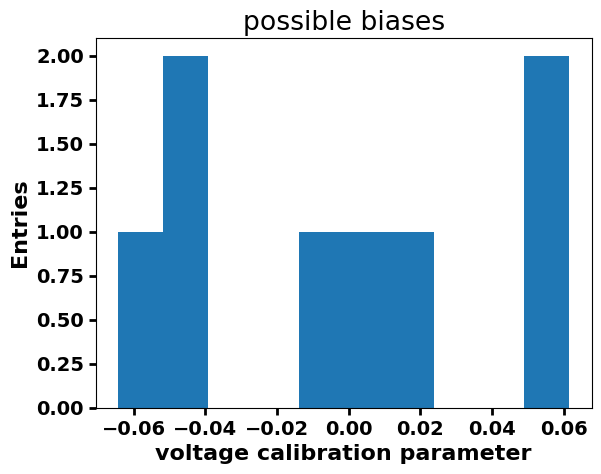
[22]:
data = (data,) # samples must be in a sequence
props = dict(boxstyle="round", facecolor="wheat", alpha=0.5)
fig, ax = plt.subplots(1, 2, figsize=(12, 4))
res = bootstrap(data, np.mean, confidence_level=0.9)
bvalues = res.bootstrap_distribution
ax[0].hist(bvalues, bins=25)
ax[0].set_title("boostraped")
ax[0].set_xlabel(r"$<bias>$")
ax[0].text(
0.05,
0.95,
"$\mu$={:.2f}".format(np.mean(bvalues)),
transform=ax[0].transAxes,
fontsize=14,
verticalalignment="top",
bbox=props,
)
ax[0].set_ylabel("entries")
ax[1].set_title("boostraped")
res = bootstrap(data, np.std, confidence_level=0.9)
bvalues = res.bootstrap_distribution
ax[1].hist(bvalues, bins=25)
ax[1].set_xlabel("$\sigma$ bias")
ax[1].text(
0.05,
0.95,
"$\mu$={:.2f}".format(np.mean(bvalues)),
transform=ax[1].transAxes,
fontsize=14,
verticalalignment="top",
bbox=props,
)
ax[1].set_ylabel("entries")
fig.subplots_adjust(wspace=0.3)
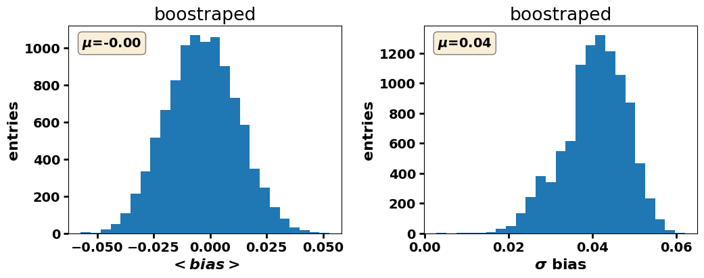